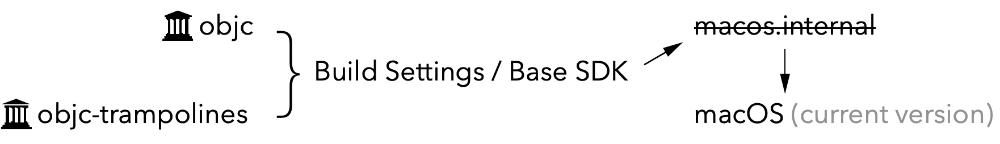

NSLog(@"Hello World");`
从2016年键下这第一行代码开始，眨眼间四年已经过去了。iOS 的行情从热到冷，人们的热情也从狂热到平静。当喧嚣的泡沫都蒸发，沉淀下来的就是暗潮汹涌的理性。但相对的，技术浪潮越来越汹涌，公司的技术门槛越高，可能当我们每天耽于重复而机械的业务流程时，就被技术本身遗忘在了起点上。
所以无论是出于什么角度考虑，我们都有理由去选择去充实自己，让漂浮不定的概念扎根在土壤里。既然我们被遗忘在了起点，就背起行囊重新出发。重新入门一次 iOS 开发。
Objective-C 是 C 的超集，它通过 Runtime 赋予了 C 语言面向对象的能力，但是这是怎么完成的？这个系列，我们将从源码的角度出发，一步步剖析 Objective-C Runtime。
可运行开源代码的配置
macOS version: 10.15.7
Xcode version: 12.0.1
objc code version: 787.1
去苹果开源网站上下载最新的 objc 代码版本（选择最新的 macOS 版本，点击进入之后，search “objc” 即可）。然后开始对源码进行配置，以能够运行。
源码配置
Error type 1:
unable to find sdk 'macosx.internal'
解决办法：
Error type 2:
file not find
解决办法：- 在项目根目录创建文件夹
RequiredFiles - 设置文件检索路径：选择
objc -> Build Settings，在工程的Header Search Paths中添加搜索路径$(SRCROOT)/RequiredFiles 添加缺失文件
缺失文件 文件获取路径 文件存放路径 sys/reason.h xnu-6153.11.26/bsd/sys/reason.h RequiredFiles/sys/reason.h mach-o/dyld_priv.h dyld-750.6/include/mach-o/dyld_priv.h RequiredFiles/mach-o/dyld_priv.h os/lock_private.h libplatform-220.100.1/private/os/lock_private.h RequiredFiles/os/lock_private.h os/base_private.h libplatform-220.100.1/private/os/base_private.h RequiredFiles/os/base_private.h pthread/tsd_private.h libpthread-416.100.3/private/tsd_private.h RequiredFiles/pthread/tsd_private.h pthread/spinlock_private.h libpthread-416.100.3/private/spinlock_private.h RequiredFiles/pthread/spinlock_private.h System/machine/spinlock_private.h xnu-6153.141.1/osfmk/machine/cpu_capabilities.h RequiredFiles/System/machine/spinlock_private.h os/tsd.h xnu-6153.141.1/libsyscall/os/tsd.h RequiredFiles/os/tsd.h System/pthread_machdep.h Libc-583/pthreads/pthread_machdep.h RequiredFiles/System/pthread_machdep.h CrashReporterClient.h Libc-825.24/include/CrashReporterClient.h RequiredFiles/CrashReporterClient.h objc-shared-cache.h dyld-750.6/include/objc-shared-cache.h RequiredFiles/objc-shared-cache.h _simple.h libplatform-220.100.1/private/_simple.h RequiredFiles/_simple.h kern/restartable.h xnu-6153.141.1/osfmk/kern/restartable.h RequiredFiles/kern/restartable.h Block_private.h libclosure-74/Block_private.h RequiredFiles/Block_private.h
- 在项目根目录创建文件夹
Error type 3:
error in dyld_priv.h
解决办法：
删除所有bridgeos(3.0)Error type 4:
error in lock_private.h
解决办法：
删除所有bridgeos(4.0)Error type 5:
error in pthread_machdep.h
解决办法：
删除或注销pthread_lock_t、_pthread_has_direct_tsd和_pthread_getspecific_direct的定义，目前已经有新的实现方式。Error type 6:
'CrashReporterClient.h' file not found
解决办法：
导入下载的还是报错，可以通过以下方式解决
1. 在文件中添加宏定义#define LIBC_NO_LIBCRASHREPORTERCLIENT
2. 如果还是报错CrashReporterClient 的问题，在BuildSetting -> Other Linker Flags 中去掉CrashReporterClient.Error type 7:
Use of undeclared identifier 'DYLD_MACOSX_VERSION_10_*'
解决办法：
在 dyld_priv.h 中添加如下代码：#define DYLD_MACOSX_VERSION_10_11 0x000A0B00 #define DYLD_MACOSX_VERSION_10_12 0x000A0C00
#define DYLD_MACOSX_VERSION_10_13 0x000A0D00
#define DYLD_MACOSX_VERSION_10_14 0x000A0E00Error type 8:
Can't open order file: /Applications/Xcode.app/Contents/Developer/Platforms/MacOSX.platform/Developer/SDKs/MacOSX10.15.sdk/AppleInternal/OrderFiles/libobjc.order
解决办法：- 选择
target -> objc -> Build Settings -> Order File - 添加搜索路径
$(SRCROOT)/libobjc.order
- 选择
Error type 9:
/xcodebuild:1:1: SDK "macosx.internal" cannot be located.
解决办法：- 选择
target -> objc -> Build Phases -> Run Script (markgc) - 将
macosx.internal改为macosx
- 选择
运行
创建新的 target：objcExplore。
设置二进制依赖。
运行。
如果断点不生效：
Build Settings -> Link-Time Optimization 为 NO。
Build Settings -> Enable Hardened Runtime 为NO。
至此我们就迈出了万里长征的第一步。Runtime 的面纱等你揭开。